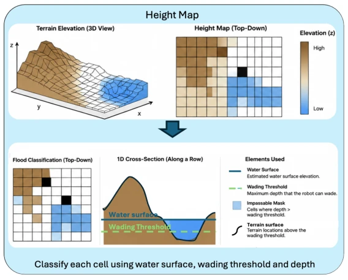
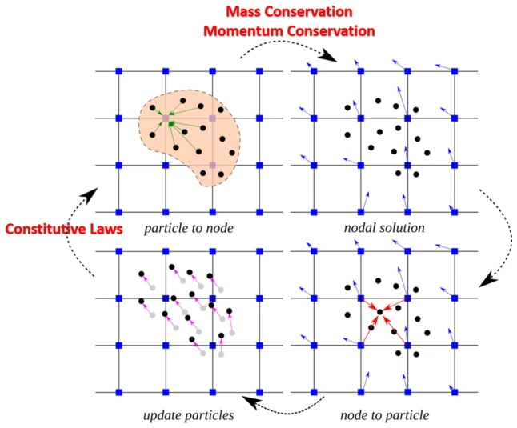
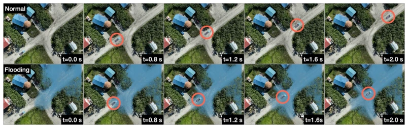
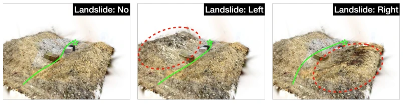
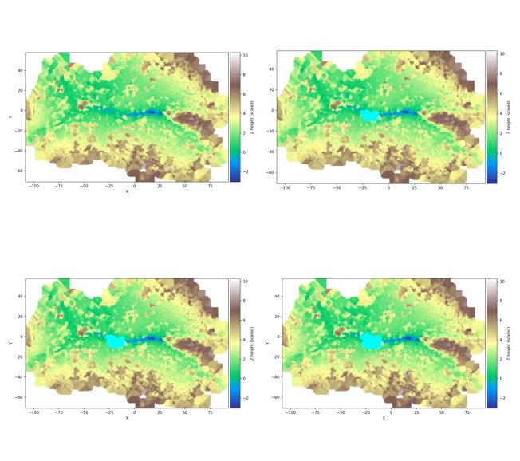

Figure 1: A physically viable world model generates scenes given different queries, and a traversability-aware path planner optimizes for routes under physical viability constraints.

Figure 5: Digital elevation map (DEM) of the environment.

Figure 7: Illustration of the MPM update scheme. (1) Material points carry physical state (mass, momentum, stress) and are overlaid on a fixed background grid. Interpolation weights distribute each particle’s mass and momentum to neighboring grid nodes (P2G). (2) The equations of motion are solved on the grid: nodal velocities are obtained by normalizing momentum by mass, internal stress forces are applied, and boundary conditions are enforced. (3) Updated nodal velocities are interpolated backe to the material points (G2P), updating each particle’s velocity, position, and de- formation gradient. (4) The material points advance to their new positions, and the grid is reset to zero in preparation for the next time step.
Figure 2: Path planning results under different flood levels.

Figure 3: Simulating traversability of an Alaskan Village before and after flood. Top: the original reconstruction of the Alaska dataset with a truck simulated as a rigid ball applied to constant torque. Bottom: flood simulation using additional material points interacting with the rigid truck. The orange circles highlight the truck location in each frame.

Figure 4: Path planning in the sandbox. The red dashed circle highlights the landslide region.

Figure 6: Terrain height maps under increasing flood levels. The first row corresponds to dry and low flood conditions, while the second row corresponds to medium and high flood conditions.